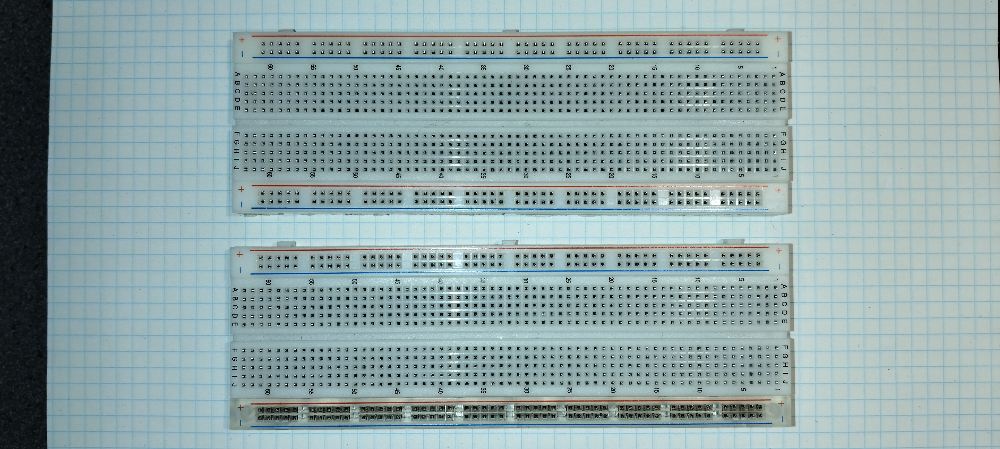
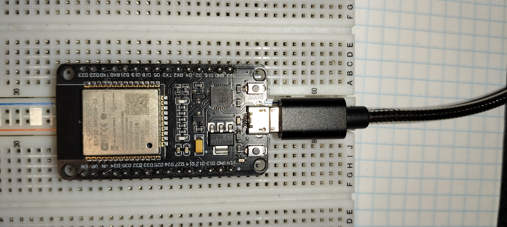
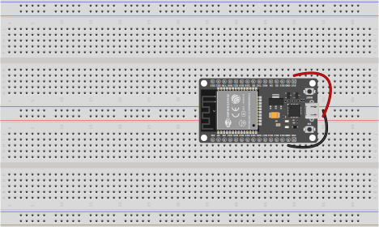
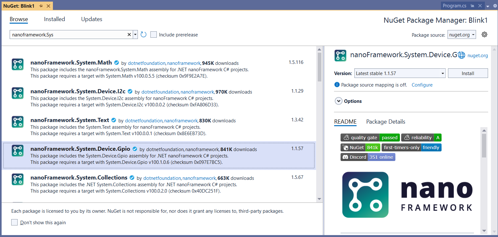
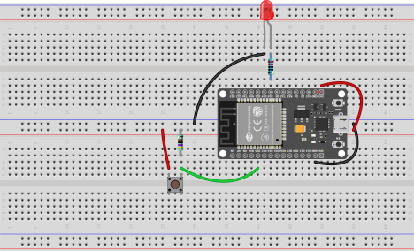

IoT H3
Internet of things, på hovedforløb 3
IoT, første del
På Programmeringsspecialet, er IoT faget opdelt så de første to uger er på H3. De næste to uger afvikles på H4.
Ved slutningen af første de, bedømmes eleverne med en delkarakter. Når anden del afsluttes, bedømmes del 1 og del 2 samlet med en standpunktskarakter.
Introduktion
Development Boards
- Arduino
- Esp32
Vi bruger ESP32-DEVKIT-V1 [foto]
Breadbords
.JPG)
På breadboardet kan vi opbygge en konstruktion med både CPU og Sensorer og Aktustorer
For at få plads til det udviklingsbord vi råder over, skal vi bruge en speciel konstruktion med to (2) breadborads som er sat sammen. På den måde kan vi forbinde til benene begge sider af udviklingsborded.
[billede] 

Sensorer og aktuatorer
Hvad en sensor og en aktuator er…
Udviklingsmiljø
Som noget helt nyt, skal vi prøve at lave forløbet, på en måde hvor vi programmerer i C#!
Det har nogen åbenlyse fordele, i læringsprocessen, at det ikke er nødvendigt at skifte programmeringssprog. Samtidig går vi glib af nyttig læring ved netop at lære et et nyt sprog (c++ eller python). Desuden er der en risiko for at frameworket ikke understøtter de funktionaliteter vi skal bruge for at lave en fornuftig IoT løsning.
I dette forløb bruger vi nanoFramework.
Se vejledningen her viser hvor og hvordan man installerer deres extension til Visual Studio.
I vejledninger er der nogle trin som beskriver hvor dan man lægger et nyt firmware image på IoT enheden. Dette trin har jeg klaret, så der allerede nanoFrameworks firmware på dimserne. __I behøver altså ikke installere nanoff og opdatere firmware__. Det kan vi muligvis komme tilbage til, men bliver sikkert ikke nødvendigt.
Der er også en udviddelse til Visual Studio Code, men med mindre support.
Øvelser
Souce kode til visse øvelser ligger på https://github.com/s0ren/intro_til-IOT_med-CS
Øvelse 1 - Hello world
Den første øvelse går ud på at oprette et projekt til nanoFramework og afvikle default skabelonen. Et lille program, som skriver en tekst i Debug vinduet.
Du skal montere ESP32 DEVKIT V1 udviklingsboardet på et dobbelt breadboar som vist her:

Når du opretter projektet, skulle der gerne være en program.cs med dette:
using System;
using System.Diagnostics;
using System.Threading;
namespace hejsa
{
public class Program
{
public static void Main()
{
Debug.WriteLine("Hello from nanoFramework!");
Thread.Sleep(Timeout.Infinite);
}
}
}Øvelse 2 - Hello, blink
Opret et ny project, i samme solution ved at højreklikke på din solution (øverst i Solution Explorer), vælg Add og New Project.., sørg for at templaten er Blank Application (.NET nanoFramework).
Her skal programmet få den indbyggede LED på ESP32’eren til at blinke. Derfor er der ikke brug for at ændre opstillingen på breadboardet. Bare brug den samme opstilling som ovenfor.
Sørg for at denne kode fungerer:
using System;
using System.Diagnostics;
using System.Threading;
using System.Device.Gpio;
namespace Blink1
{
public class Program
{
public static void Main()
{
Debug.WriteLine("Hello from nanoFramework!");
int PinNumber = 2;
GpioPin bultinLED = new GpioController().OpenPin(PinNumber, PinMode.Output);
while (true)
{
// Turn on the LED (assuming an active high configuration)
bultinLED.Write(PinValue.High);
Thread.Sleep(500); // Keep the LED on for 500 milliseconds
// Turn off the LED
bultinLED.Write(PinValue.Low);
Thread.Sleep(500); // Keep the LED off for 500 milliseconds
}
Thread.Sleep(Timeout.Infinite);
}
}
}Bemærk at koden også gør brug af namespacet System.Device.Gpio. Dette findes i en pakke fra nanoFramework som skal tilføjes til projektet.
- Højre-klik på dit projekt
- vælg Manage NuGet Packages…
- 
- Vælg Browse
- Søg evt på
nanoFramework.sys - tryk Install
Øvelse 3 - Hello, blink med en ekstern lysdiode (LED)
Her skal vi bygge på breadboardet.

Det nye er at:
- der skal være en LED på breadbordet, som skal styres fra boarded.
- LED’en skal beskyttes mod overspænding med en modstand på 220 ohm.
- Den positive side af LED’en, det ben der er længst, skal forbindes til pin 18 (via modstanden)
- LED’ens andet ben skal forbindes til stel. På engelsk Ground eller GND.
Programkoden er næsten den samme, blot er PinNumber sat til at være 18 i stedet for 2:
using System;
using System.Device.Gpio;
using System.Diagnostics;
using System.Threading;
namespace Blink2_pin18
{
public class Program
{
public static void Main()
{
Debug.WriteLine("Hello from nanoFramework! With police blink blink");
int PinNumber = 18;
GpioPin bultinLED = new GpioController().OpenPin(PinNumber, PinMode.Output);
while (true)
{
// Turn on the LED (assuming an active high configuration)
bultinLED.Write(PinValue.High);
Thread.Sleep(500); // Keep the LED on for 500 milliseconds
// Turn off the LED
bultinLED.Write(PinValue.Low);
Thread.Sleep(500); // Keep the LED off for 500 milliseconds
}
}
}
}Øvelse 3b - Andre timing strategier.
Øvelse 3d - Ekstra LED
Øvelse 4 - Input fra trykknap
